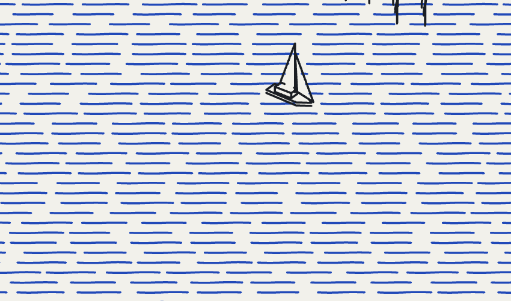
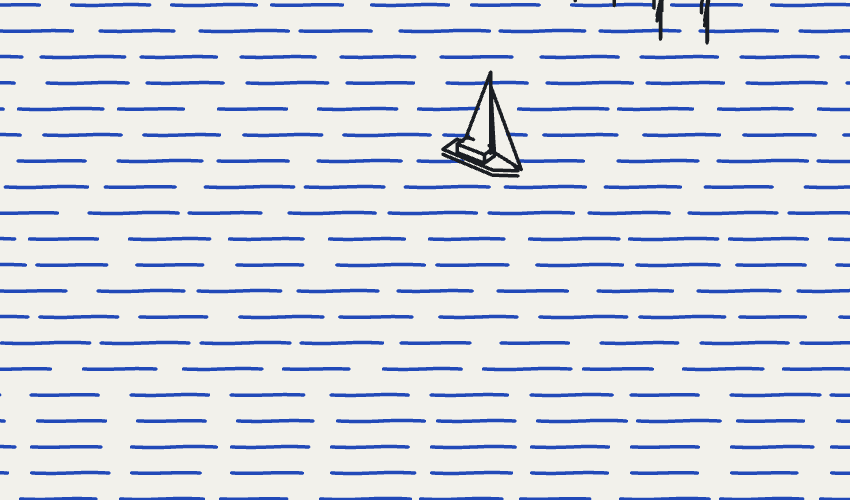

Original review · 15 November 2026
Lake row spacing increases from 1.65 to 2.6 mm at reference pen width and Detail: about 58% more space, or 37% fewer rows. Ripple shape and length stay the same. Ocean and river spacing are unchanged.


Named LOD comparison: lake-air-before and lake-air-after. Hallstatt’s estimated plotting time falls from 77.6 to 69.3 minutes; water uses about 8.4 metres less ink. The total waste percentage rises from 4.1% to 4.6% because there is less clean water ink in the total, not because other features changed.
Reviewed the full lake sheet, enlarged lake crops and the two changed golden sheets, Hallstatt and Zürich Airport. Only water-wave counts and aggregate plot/SVG summaries change. Build and all 612 tests pass. No physical print or exhaustive location review was made.